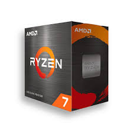
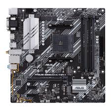
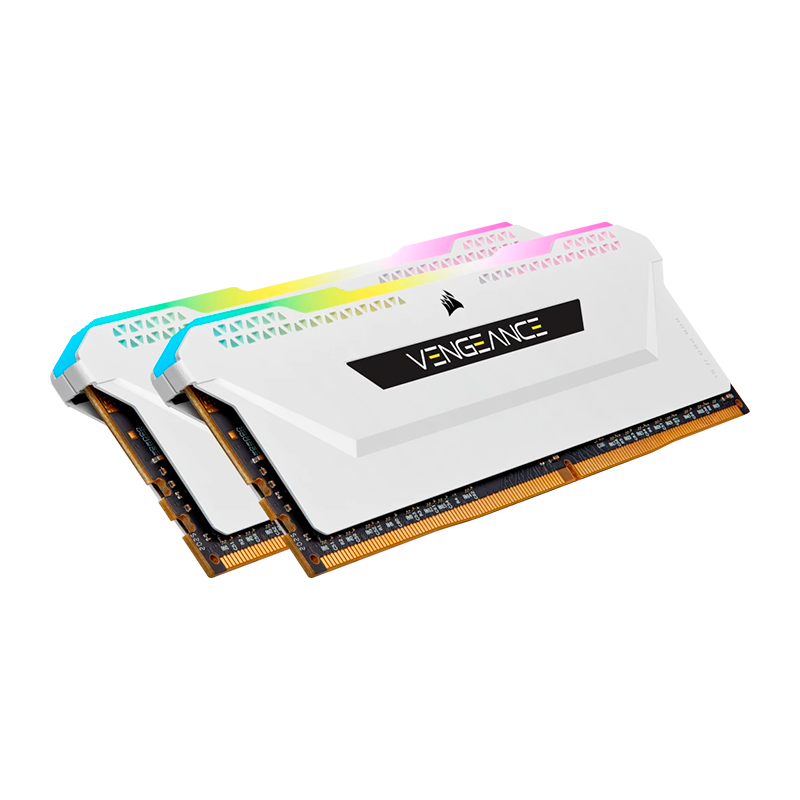
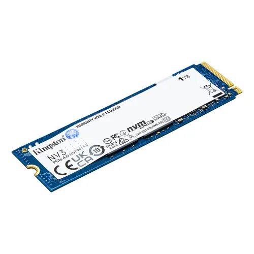
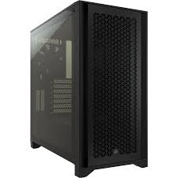

Procesador

Función: Es el cerebro del computador. Ejecuta instrucciones, procesa datos y coordina
todas las
tareas.
Recomendaciones: Fíjate en la cantidad de núcleos, velocidad (GHz) y la generación. Revisa que sea
compatible con tu placa base. Elige según el uso: básico, juegos o trabajo pesado.
Mejores procesadores para la generacion AM4
- AMD Ryzen 7 5800X3D
- AMD Ryzen 5 5600 / 5600X
- AMD Ryzen 7 5700X / 5800X
- AMD Ryzen 5 5600G
- AMD Ryzen 5 5500
Placa base

Función: Conecta y permite que todos los componentes funcionen juntos.
Recomendaciones: Verifica el socket del procesador, el tipo de RAM que soporta, número de puertos y
tamaño (ATX, microATX, etc.). No compres la más barata: una buena placa da estabilidad.
Memoria RAM

Función: Guarda datos temporales mientras el sistema trabaja, permitiendo que los
programas funcionen
rápido.
Recomendaciones: Mira la capacidad (8, 16 o 32 GB), velocidad (MHz) y tipo (DDR4, DDR5). Revisa
compatibilidad con la placa base.
Almacenamiento solido

Función: Guarda el sistema, programas y archivos. Es mucho más rápido que un disco
duro tradicional.
Recomendaciones: Prefiere NVMe si la placa lo soporta. Mira la capacidad (mínimo 240 GB, ideal 500
GB o más) y la velocidad de lectura/escritura.
Fuente de poder
Función: Alimenta todos los componentes del PC de forma estable.
Recomendaciones: No escatimes. Busca certificación 80 Plus, potencia adecuada para tu gráfica y
procesador, y marcas confiables. Evita genéricas.
Gabinete

Función: Protege los componentes y ayuda con el flujo de aire.
Recomendaciones: Fíjate en el tamaño compatible con tu placa base, espacio para ventilación y buena
gestión de cables. Revisa que tenga buen flujo de aire, no solo luces.